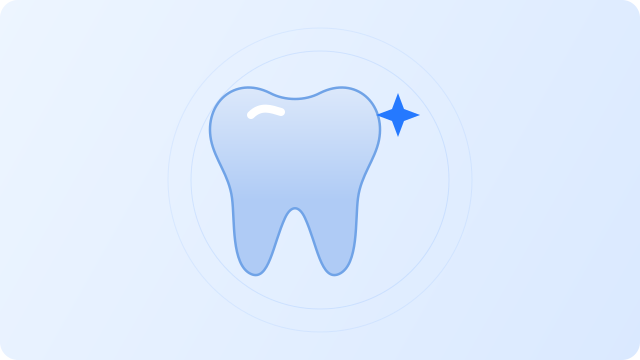
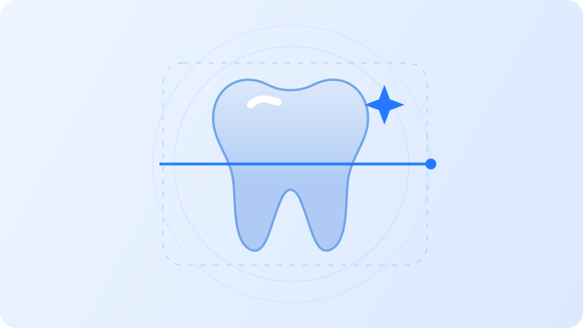
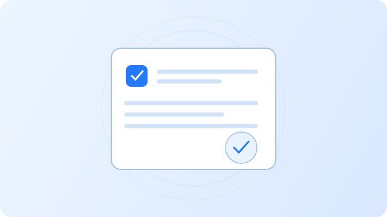

Vật liệu phục hình
Danh mục giới thiệu các dòng vật liệu phục hình tại labo. Trao đổi cùng nha khoa và labo về trường hợp cụ thể.
AT Dental Lab kết nối quy trình chế tác phục hình và thông tin bảo hành, giúp nha khoa và khách hàng tra cứu thuận tiện.

Tìm hiểu vật liệu, dáng răng và thông tin được ghi trên thẻ bảo hành của bạn.

Danh mục giới thiệu các dòng vật liệu phục hình tại labo. Trao đổi cùng nha khoa và labo về trường hợp cụ thể.

Tham khảo các tên dáng răng trong danh mục của AT Dental Lab để thuận tiện khi trao đổi nhu cầu.

Nhập mã trên thẻ để xem thông tin phục hình, vị trí răng và thời hạn đã được lưu.
Bạn đã có thẻ bảo hành? Tra cứu thông tin phục hình tại đây.